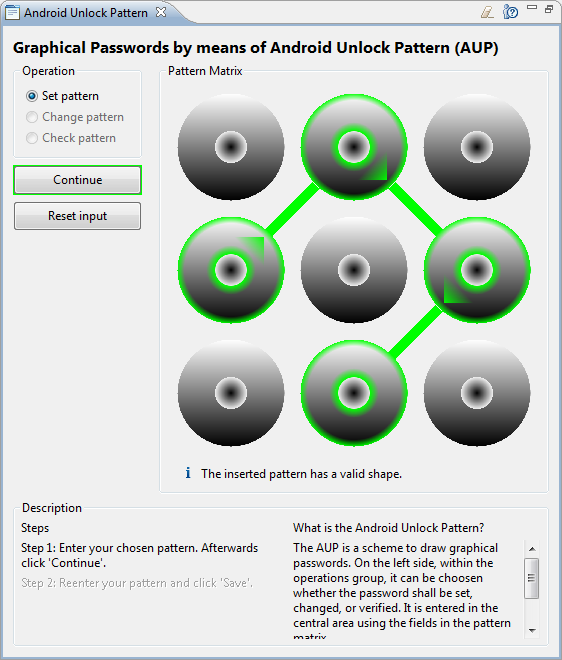
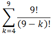

Das im JCrypTool implementierte grafische Passwortverfahren ist der Android-Mustersperre (vom englischen Android Unlock Pattern, AUP) nachempfunden, mit dem sich bei Android-Smartphones die Bildschirmsperre aufheben lässt. Dieses Verfahren wird im Folgenden genauer vorgestellt und die Sicherheit im Vergleich zur PIN-Eingabe analysiert. Anschließend werden einige weitere Methoden zur Erzeugung grafischer Passwörter vorgestellt.
Dieses Authentifizierungsverfahren wird beim Android-Betriebssystem seit Oktober 2008 in der Version 1.0 als Entsperrmechanismus angeboten. Ziel dieser Methode ist es Unbefugten den Zugriff auf Daten des Telefons zu verweigern. Im Folgenden wird ein kurzer Einblick in die Vorschriften zur Passworterstellung und die Sicherheit des AUP gegeben.

Des AUP besteht aus neun quadratisch angeordneten Feldern, deren Verbindungen als Passwort angesehen werden können. Das durch die Eingabe entstandene Muster wird dann zum Entsperren verwendet.
Bei der AUP Passwortwahl müssen die folgenden Regeln beachtet werden:
Da auf vielen Smartphones ein vom Hersteller modifiziertes Android läuft, wird das Google Nexus S mit nicht-modifiziertem Android 2.3.4 als Referenzplattform verwendet. Nach fünfmaliger Falscheingabe des grafischen Passwortes muss der Benutzer 30 Sekunden warten. Zusätzlich besteht die Möglichkeit das Smartphone mithilfe des zugehörigen Google-Passwortes zu entsperren. Der Benutzer hat aber auch noch weitere 15 Versuche um das Muster einzugeben. Nach jeweils fünf Fehlversuchen muss 30 Sekunden gewartet werden. Nach insgesamt 20 Fehlversuchen kann nur noch das Google-Passwort zum Entsperren genutzt werden. Die Sicherheit dieses Passworts wird nicht näher betrachtet, da es sich dabei um ein textuelles Passwort handelt.
Durch die Regeln für die Passworterstellung ergeben sich insgesamt 389.112 mögliche Muster. Dieser Wert wurde mittels eines Brute-Force Programms ermittelt.
Zum Vergleich: Bei einer 4 bis 9 stelligen PIN, die aus Ziffern von 1 bis 9 gebildet werden kann und bei der jede Ziffer nur einmal vorkommen darf, gibt es 985.824 verschieden Möglichkeiten. Dies lässt sich durch folgende Formel berechnen:

Die folgende Tabelle illustriert die Anzahl der Möglichkeiten des AUP im direkten Vergleich zu der oben definiereten, eingeschränkten PIN. Die Spalte "Faktor" beschreibt wie viel mehr Muster sich ergeben, wenn die Länge um 1 erhöht wird. Die Spalte "AUP/PIN" gibt den Quotienten zwischen der Anzahl der APU und PIN Variationen an.
| PIN | AUP | ||||
| Stellen | Anzahl | Faktor | Anzahl | Faktor | AUP/PIN |
| 4 | 3.024 | 5 | 1.624 | 4,40 | 0,537 |
| 5 | 15.120 | 4 | 7.152 | 3,64 | 0,473 |
| 6 | 60.480 | 3 | 26.016 | 2,80 | 0,430 |
| 7 | 181.440 | 2 | 72.912 | 1,93 | 0,402 |
| 8 | 362.880 | 1 | 140.704 | 1 | 0,388 |
| 9 | 362.880 | / | 140.704 | / | 0,388 |
| Summe | 985.824 | 389.112 | 0,395 | ||
Wie der Tabelle entnommen werden kann hat die AUP ein kleineres Wachstum. Dadurch schneidet es im Direktvergleich zur PIN mit zunehmender Länge immer schlechter ab. In der Summe über alle möglichen Muster kann das AUP nur etwa 40% der Variationen der PIN erzielen. Das AUP ist folglich im Direktvergleich zur eingeschränkten PIN, bei gleichen Längen, deutlich schwächer. Es sollte aber bedacht werden, dass sich Menschen Muster bzw. Bilder nachweisbar besser merken können [1]. Folglich lassen sich auch längere Muster gut merken, weshalb nicht davon ausgegangen werden kann, dass der Direktvergleich einen hohen Aussagenwert besitzt. Auch bedacht werden sollte, dass eine "normale" PIN deutlich mehr Möglichkeiten besitzt. Die Anzahl der Variationen einer PIN mit 10 Ziffern der Länge l beträgt 10l. Das Ergebnis eines Vergleichs der Gesamtanzahl aller 4-9 stelligen PINs mit der Gesamtheit aller AUP Muster ergibt, dass es etwa 2856 so viele PIN Variationen wie AUP Variationen gibt. Dadurch, dass es beim AUP weniger Möglichkeiten bei der Passwortwahl gibt, ist es gegen einen Brute-Force-Angriff anfälliger als PIN- oder Passwort-Authentifizierungsverfahren. In der Praxis ist ein Brute-Force-Angriff, über die reguläre Eingabe, nicht möglich, da nach spätestens 20 Versuchen das Email-Passwort benötigt wird.
Shoulder Surfing
Als shoulder-surfing werden Angriffe bezeichnet, bei denen ein Angreifer eine Person bei der Eingabe ihres Passworts beobachtet um es vollständig oder teilweise zu erhalten. Dies kann direkt durch den Angreifer persönlich oder beispielsweise mit Hilfe von Kameras erfolgen. Da für die Eingabe des AUP ein sehr großer Bereich des Displays verwendet wird, sind Rückschlüsse auf das Entsperrmuster einfacher als wenn PINs oder Passwörter verwendet worden wären.
Smudge Angriff
Bei der Nutzung von Geräten mit Touchscreen bleiben meist ölige Rückstände auf der Oberfläche zurück. Diese können als Seitenkanal für einen Angriff, den Smudge Angriff, verwendet werden um kürzlich oder häufig berührte Bereiche des Bildschirms zu bestimmen. Die resultierenden Informationen können dann beispielsweise verwendet werden um Informationen über das Authentifizierungsmuster oder -passwort zu erhalten.
Angriff auf die gespeicherten Daten
Gelingt es Authentifizierungsdaten auszulesen und somit vom authentifizierenden System zu trennen, so können diese direkt untersucht werden. Es ist dann beispielsweise möglich einen Brute-Force-Angriff, der alle Möglichkeiten durchprobiert bis die berechneten Daten mit den entwendeten Daten übereinstimmen, auszuführen. Problematisch im Zusammenhang mit Android ist, dass die Muster für ihre Speicherung lediglich ungesalzen gehasht[2] werden. Dies ermöglicht sogar einen noch mächtigeren Wörterbuchangriff auf die gespeicherten Muster. Kennt der Angreifer den Hashwert, so kann er mit diesem Angriff in Sekundenschnelle sagen welches Muster verwendet wurde.
| Nutzereingabe | Interne Represtentation |
Das DAS ist eine Art der Nutzerauthentifizierung, bei der "Passwörter" gezeichnet werden. Diese werden als Abfolge von berührten Feldern in einem Raster gespeichert. Beim DAS gibt es keine Einschränkungen in Bezug auf die Länge oder Wiederholung von Feldern. Darüber hinaus kann ein Muster aus mehreren nicht zusammenhängenden Teilen bestehen. Das AUP unterliegt im Gegensatz zum DAS den oben aufgeführten Einschränkungen und ist demzufolge ein Spezialfall. Die Entwickler des DAS empfehlen eine Rastergröße von fünf mal fünf[3].
Wie im Artikel [3] angegeben besitzt das DAS ein höheres Sicherheitsniveau. Dies kann darauf zurück geführt werden, dass Menschen sich Grafiken und Figuren besser merken können und sich somit auch längere Muster gut behalten lassen. Es sollte aber auch bedacht werden, dass sich spiegelsymmetrische Bilder besser merken lassen als asymmetrische [4]. Dadurch kann der Wortraum für Angriffe erheblich verkleinern werden, was in der Folge auch die Sicherheit verringert.
Windows 8 greift die Idee der grafischen Passwörter auf und bietet sie als Login-Möglichkeit an [5]. Der Nutzer kann sich für diesen Mechanismus ein Bild auswählen und im Anschluss Bereiche darauf mit verschiedenen Gesten hervorheben. Im Gegensatz zum DAS sind keine freien Gesten möglich. Die Gesten sind auf Kreise, Linien und Punkte limitiert. Ein weiterer Unterschied ist auch, dass lediglich nur verschiedene Charakteristiken für die Authentisierung gespeichert werden und nicht die berührten Felder. Bei Linien sind dies der Anfangs- und Endpunkt, sowie ihre Richtung. Darüber hinaus ist das Raster beim Picture Passwort deutlich feiner. So wird die längere Seite des Bildes in 100 Abschnitte unterteilt. Diese Skalierung wird anschließend auf die kürzere Seite übertragen um das Raster zu bilden, welches über das Bild gelegt wird. Wie von Microsoft angegeben bietet auch dieses Verfahren eine deutlich größere Sicherheit als traditionelle Passwörter.
Fußnoten